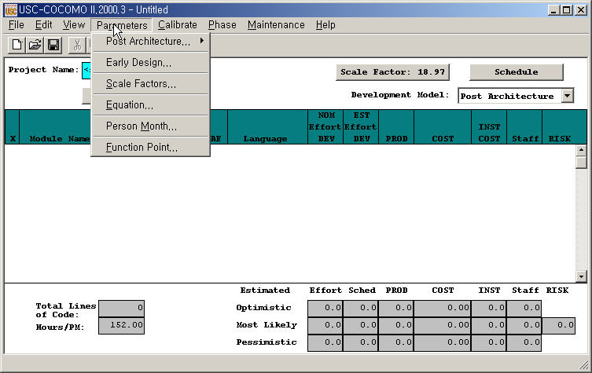
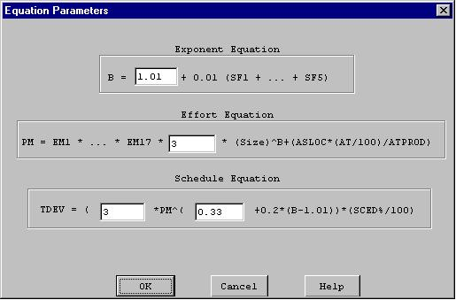

The Parameters menu option will enable you to look at, or change the values of effort adjustment factors, scale factors and effort/schedule estimating equations factors for the current project.
To choose the Parameters menu and its options, click on Parameters with the mouse. The Parameters menu will appear as Figure 4-1.

The Product option displays five cost drivers: RELY, DATA, DOCU, CPLX, and RUSE and their corresponding ratings and multiplier values.
Select Product from the Parameters menu with the mouse. The Product Dialog Box will appear as Figure 4-2.
FIGURE 4-2: Product
Dialog Box
The Platform option displays three cost drivers: TIME, STOR and PVOL, and their corresponding ratings and multiplier values.
Select Platform from the Parameters menu with the mouse. The Platform Dialog Box will appear as Figure 4-3.
The Personnel option displays six cost drivers: ACAP, AEXP, PCAP, PEXP, LEXP, and PCON and their corresponding ratings and multiplier values.
Select Personnel from the Parameters menu with the mouse. The Personnel Dialog Box will appear as Figure 4-4.
The Project option displays three cost drivers: TOOL, SCED, and SITE and their corresponding ratings and multiplier values.
Select Project from the Parameters menu with the mouse. The Project Dialog Box will appear as Figure 4-5.
The User Defined EAF option displays two cost driver: USR1 and USR2, and their corresponding ratings and multipliers.
Select User EAF from the Parameters
menu with the mouse. The User EAF Dialog Box will appear as Figure 4-6.
FIGURE 4-6 User
Defined EAF Dialog Box
The Scale Factors option displays five development attributes: PREC, FLEX, RESL, TEAM and PMAT, and their corresponding ratings and values.
Select Scale Factors from the Parameters menu with the mouse. The Scale Factor Dialog Box will appear as Figure 4-7.
FIGURE 4-7 Scale
Factors Dialog Box
The Equation option displays effort
and schedule equations.
Select Equation from the Parameters
menu with the mouse. The Equation Dialog Box will appear as Figure 4-8.

FIGURE 4-8 Equation Dialog Box
The Reset option resets the values of multiplying factors and effort/schedule estimating equations of the current project back to the COCOMO default values.
Select Reset from the Parameters menu with mouse. The command will be executed directly, and there is no warning message for users. After the RESET, the values of all multiplying factors and effort estimating equations of current project will be changed to the COCOMO default values.